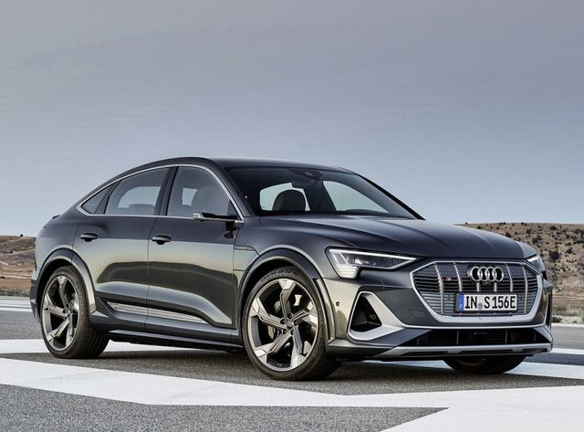
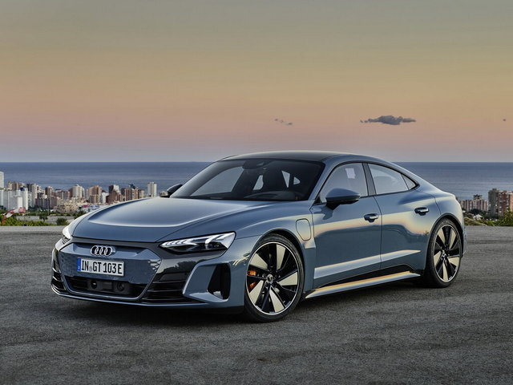

Світові продажі електромобілів цьогоріч можуть сягнути нового максимуму – MЕА
Світові продажі електромобілів зросли удвічі у 2021 році, становивши близько 9% автомобільного ринку загалом. Цьогоріч очікується, що продажі електрокарів досягнуть нового максимуму — 13% від загального обсягу продажів легкових автомобілів.
Про це йдеться у вересневій доповіді Міжнародного енергетичного агентства (IEA Tracking Clean Energy Progress).
Раніше в агентстві заявляли, що продажі електромобілів у 2021 році досягли 6,6 млн.
А у першому кварталі 2022 року показник становив 2 млн, зрісши на 75% порівняно з першими трьома місяцями 2021 року.
Тим часом МЕА акцентує увагу на необхідності вжити більш активних заходів в інших секторах, щоб досягти цілей за нульовими рівнями викидів до 2050 року.
Так, МЕА відзначило «надихаючі ознаки прогресу в ряді секторів», але попередило, що потрібні «активніші зусилля».
За даними МЕА, виробники електромобілів можуть виконати цілі, поставлені на 2030 рік, у рамках плану досягнення нульового рівня викидів до 2050 року. Це саме стосується і сегменту виробництва освітлювальних приладів, де понад 50% ринку зараз використовує технологію LED.
РЕКЛАМА
Водночас агентство зазначає, що ситуація з продажем електромобілів «ще не є світовим феноменом».
«Продажі в країнах, що розвиваються, йдуть повільними темпами у зв’язку зі зростанням вартості купівлі та недоліком інфраструктури для зарядки електромобілів», — резюмують в агентстві.
Купуйте поліс онлайн, щоб не переплачувати на кордоні. Миттєве страхування на автомобіль для виїзду за кордон: 3 хвилини — і поліс на Email.
Деякі моделі електромобілів
2020-2021:
Audi e-tron (+ версия Sportback)
- Модель на сайті: Audi e-tron
- Країна-виробник: Германія
- Все ясно
- Тип кузова: средньорозмірний кросовер
- Максимальна дальність ходу: 357 км/г
- Разгін із 0 до 100 км/г: 6,6 с (boost mode — 5,7 с)
Audi e-tron GT
- Країна-виробник: Германія
- Тип кузова: 4-дверний седан
- Максимальна дальність ходу: 400 км
- Разгін із 0 до 100 км/г: 4,1 с